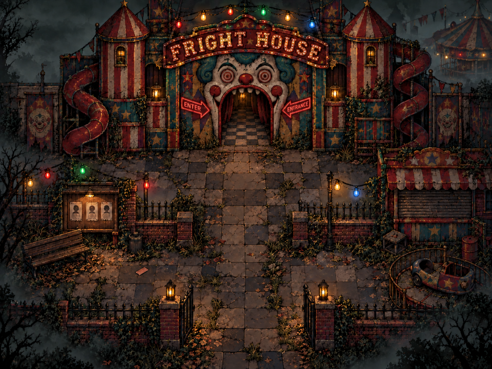
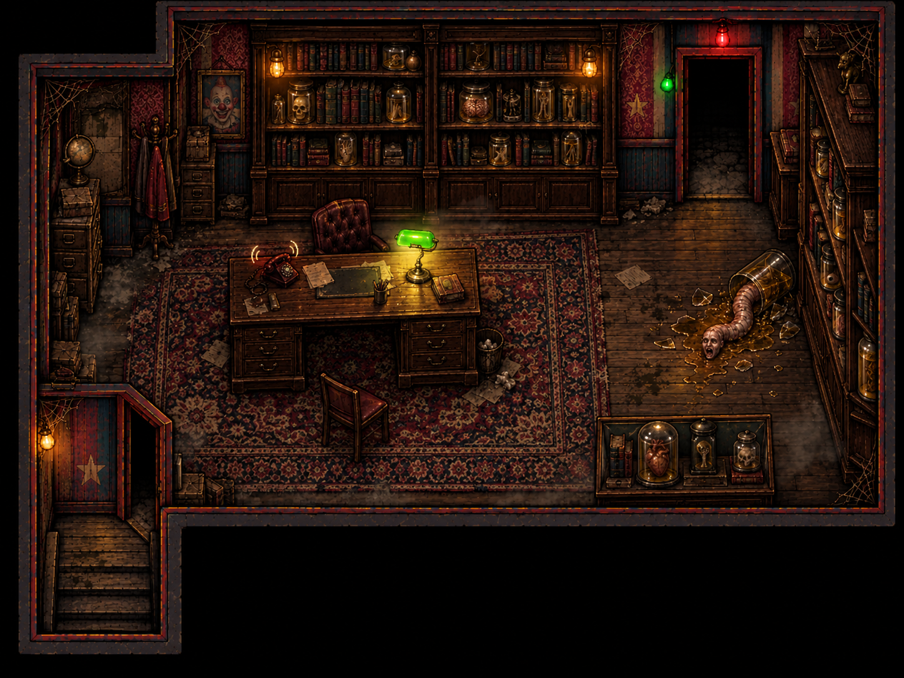
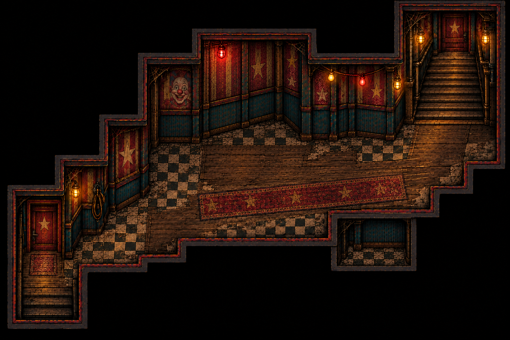
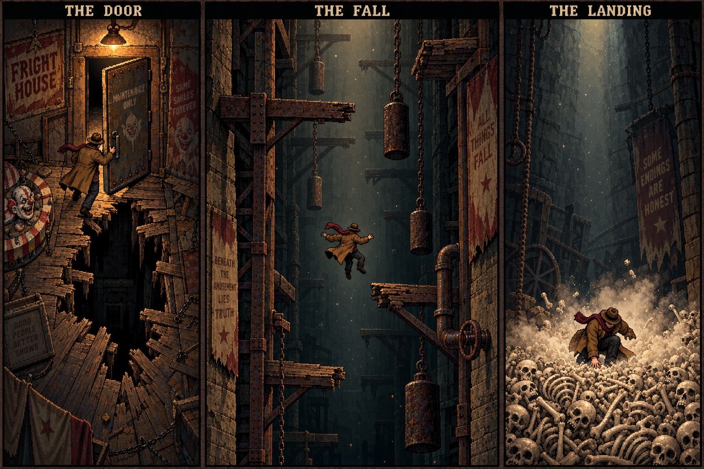
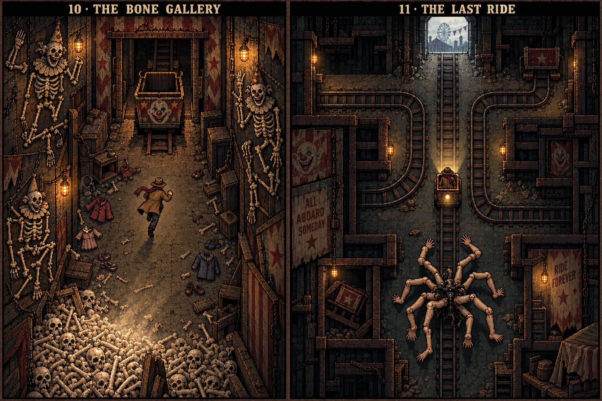
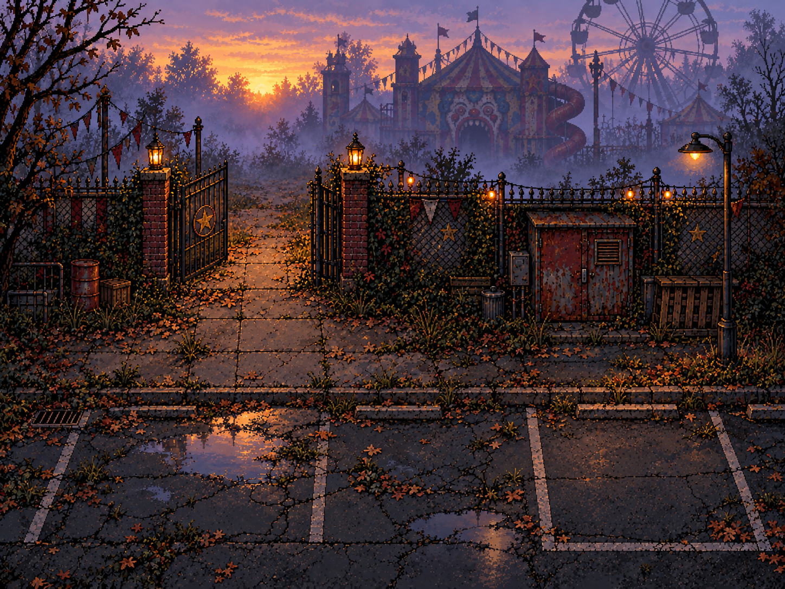

01 / THE STREET
Outside Fright House
Explore the solid bench, kiosk and gates. Inspect the newspaper and ticket, disturb the ravens, then enter the clown’s mouth.
Jump straight into any updated level. Use the quick starts to test a particular encounter without solving the earlier puzzles.

Explore the solid bench, kiosk and gates. Inspect the newspaper and ticket, disturb the ravens, then enter the clown’s mouth.

The teddy watches, the rat runs, balloons pop and flies scatter through the corridor. Search the ledger and open the labelled 3D lost-property cupboard.

Solve the power riddle, climb the stairs and dodge the red-haired clown’s arrows, explosive balloons, spiders and moving machinery.

Large toys crowd a solid crate. Flies circle the storeroom and a rat climbs from its opening bin. The toys’ eyes glow and follow you as the lights fail. Keep moving until the red exit releases.

Pick up the ringing 3D phone. A specimen escapes its jar and crawls after you, spitting bile. Use the desk and shelves as cover.

Dodge real 3D steel drums and their paint bursts, then turn the brass handwheel to lift the stair gate.

Set three different lever puzzles, lock the moving 3D panels and cross between steam bursts. Fixed landings save your progress.

Find a metal fork, short the giant clown’s contacts, dodge unpredictable electric bolts beneath moth-filled lamps.

Open the 3D door and fall through moving beams, swinging weights and pipes. Avoid hanging webs and falling stones, then land on a pile of bones in a burst of dust.

Run past scarecrows that turn toward you, ceiling drips and scattered children’s clothes. Shirts, trousers, socks, belts and glasses litter the floor. Board the cart to escape.
Dodge bursting crates, jump barricades and avoid the spider’s ink while choosing exits through the maze. Reach sunrise, walk to your car and drive away.

Leave the foggy park, disturb autumn leaves and drive away in a red Cadillac to a cheerful waltz. A circular camera close ends on THE END.
Move: arrows / WASD · Examine: E · Platformer jump: Space · Climb: ↑ / ↓ · Camera flash: F
Touch controls are available in every level. Pause and retry are beside the game.